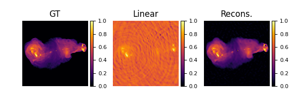
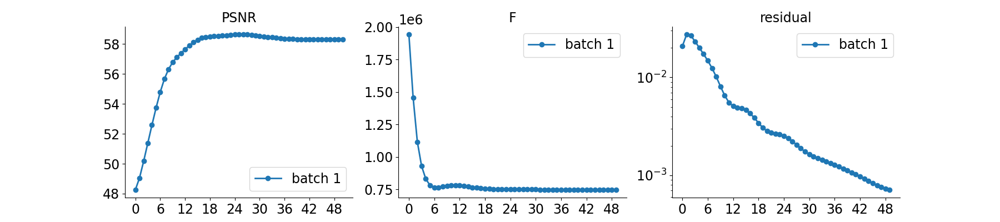

Note
New to DeepInverse? Get started with the basics with the 5 minute quickstart tutorial..
Radio interferometric imaging with deepinverse#
In this example, we investigate a simple 2D Radio Interferometry (RI) imaging task with deepinverse. The following example and data are taken from Aghabiglou et al.[1]. If you are interested in RI imaging problem and would like to see more examples or try the state-of-the-art algorithms, please check BASPLib.
Import required packages#
We rely on the TorchKbNufft as the non-uniform FFT backend in this problem.
This first snippet is just here to check that dependencies are installed properly.
import torch
import numpy as np
import torchkbnufft as tkbn
import deepinv as dinv
from deepinv.utils.plotting import plot, plot_curves, scatter_plot, plot_inset
from deepinv.utils import load_np_url, get_image_url, get_degradation_url
from deepinv.utils.tensorlist import dirac_like
from deepinv.optim import FISTA
device = dinv.utils.get_device()
Selected GPU 0 with 1761.25 MiB free memory
The RI measurement operator#
The RI inverse problem aims at restoring the target image \(x\in \mathbb{R}^{n}\) from complex measurements (or visibilities) \(y \in \mathbb{C}^{m}\), reads:
where \(A\) can be decomposed as \(A = GFZ \in \mathbb{C}^{m \times n}\). There, \(G \in \mathbb{C}^{m \times d}\) is a sparse interpolation matrix, encoding the non-uniform Fourier transform, \(F \in \mathbb{C}^{d\times d}\) is the 2D Discrete Fourier Transform, \(Z \in \mathbb{R}^{d\times n}\) is a zero-padding operator, incorporating the correction for the convolution performed through the operator \(G\), and \(\epsilon \in \mathbb{C}^{m}\) is a realization of some i.i.d. Gaussian random noise.
This operator can be implemented with TorchKbNUFFT.
Below, we propose an implementation using the deepinv.physics.LinearPhysics.
As such, operations like grad and prox are available.
from deepinv.physics import LinearPhysics
class RadioInterferometry(LinearPhysics):
r"""
Radio Interferometry measurement operator.
Args:
img_size (tuple): Size of the target image, e.g., (H, W).
samples_loc (torch.Tensor): Normalized sampling locations in the Fourier domain.
dataWeight (torch.Tensor): Data weighting for the measurements.
interp_points (Union[int, Sequence[int]]): Number of neighbors to use for interpolation in each dimension. Default is `7`.
k_oversampling (float): Oversampling of the k space grid, should be between `1.25` and `2`. Default is `2`.
real_projection (bool): Apply real projection after the adjoint NUFFT.
device (torch.device): Device where the operator is computed.
"""
def __init__(
self,
img_size,
samples_loc,
dataWeight=torch.tensor(
[
1.0,
]
),
k_oversampling=2,
interp_points=7,
real_projection=True,
device="cpu",
**kwargs,
):
super(RadioInterferometry, self).__init__(**kwargs)
self.device = device
self.k_oversampling = k_oversampling
self.interp_points = interp_points
self.img_size = img_size
self.real_projection = real_projection
# Check image size format
assert len(self.img_size) == 2
# Define oversampled grid
self.grid_size = (
int(img_size[0] * self.k_oversampling),
int(img_size[1] * self.k_oversampling),
)
self.samples_loc = samples_loc.to(self.device)
self.dataWeight = dataWeight.to(self.device)
self.nufftObj = tkbn.KbNufft(
im_size=self.img_size,
grid_size=self.grid_size,
numpoints=self.interp_points,
device=self.device,
)
self.adjnufftObj = tkbn.KbNufftAdjoint(
im_size=self.img_size,
grid_size=self.grid_size,
numpoints=self.interp_points,
device=self.device,
)
# Define adjoint operator projection
if self.real_projection:
self.adj_projection = lambda x: torch.real(x).to(torch.float)
else:
self.adj_projection = lambda x: x
def setWeight(self, w):
self.dataWeight = w.to(self.device)
def A(self, x):
return (
self.nufftObj(x.to(torch.cfloat), self.samples_loc, norm="ortho")
* self.dataWeight
)
def A_adjoint(self, y):
return self.adj_projection(
self.adjnufftObj(y * self.dataWeight, self.samples_loc, norm="ortho")
)
This measurement operator is readily available in the Physics module in deepinv.physics.RadioInterferometry
and can be used directly as
from deepinv.physics import RadioInterferometry
physics = RadioInterferometry(img_size=img_size, samples_loc=samples_loc, device=device)
Groundtruth image#
The following data is our groundtruth with the settings of Experiment II in Aghabiglou et al.[1].
The groundtruth data has been normalized in the [0, 1] range.
As usual in radio interferometric imaging, the data has high dynamic range,
i.e. the ratio between the faintest and highest emissions is higher than in traditional low-level vision tasks.
In the case of this particular image, this ratio is of 5000.
For this reason, unlike in other applications, we tend to visualize the logarithmic scale of the data instead of the data itself.
image_gdth = (
load_np_url(get_image_url("3c353_gdth.npy")).unsqueeze(0).unsqueeze(0).to(device)
)
def to_logimage(im, rescale=False, dr=5000):
r"""
A function plotting the image in logarithmic scale with specified dynamic range
"""
if rescale:
im = im - im.min()
im = im / im.max()
else:
im = torch.clamp(im, 0, 1)
return torch.log10(dr * im + 1.0) / np.log10(dr)
imgs = [image_gdth, to_logimage(image_gdth)]
plot(
imgs,
titles=[f"Groundtruth", f"Groundtruth \nin logarithmic scale"],
cmap="inferno",
cbar=True,
)
/local/jtachell/deepinv/deepinv/deepinv/utils/plotting.py:439: UserWarning: This figure was using a layout engine that is incompatible with subplots_adjust and/or tight_layout; not calling subplots_adjust.
plt.subplots_adjust(hspace=0.2, wspace=0.2)
Sampling pattern#
We’ll load a simulated sampling pattern of Very Large Array telescope.
For simplicity, the coordinates of the sampling points have been normalized to the range of \([-\pi, \pi]\).
In RI imaging task, a super-resolution factor will normally be introduced in imaging step,
so that the possibility of point sources appearing on the boundaries of pixels can be reduced.
Here, this factor is 1.5.
uv = load_np_url(get_degradation_url("uv_coordinates.npy")).to(device)
scatter_plot([uv], titles=["uv coverage"], s=0.2, linewidths=0.0)
/local/jtachell/deepinv/deepinv/deepinv/utils/plotting.py:634: UserWarning: No data for colormapping provided via 'c'. Parameters 'cmap' will be ignored
axs[r, i].scatter(
/local/jtachell/deepinv/deepinv/deepinv/utils/plotting.py:653: UserWarning: This figure was using a layout engine that is incompatible with subplots_adjust and/or tight_layout; not calling subplots_adjust.
plt.subplots_adjust(hspace=0.01, wspace=0.05)
Simulating the measurements#
We now have all the data and tools to generate our measurements!
The noise level \(\tau\) in the spacial Fourier domain is set to 0.5976 * 2e-3.
This value will preserve the dynamic range of the groundtruth image in this case.
Please check Terris et al.[2] and Aghabiglou et al.[1].
for more information about the relationship between the noise level in the Fourier domain and the dynamic range of the target image.
tau = 0.5976 * 2e-3
# build sensing operator
physics = RadioInterferometry(
img_size=image_gdth.shape[-2:],
samples_loc=uv.permute((1, 0)),
real_projection=True,
device=device,
)
# Generate the physics
torch.manual_seed(0)
y = physics.A(image_gdth)
noise = (torch.randn_like(y) + 1j * torch.randn_like(y)) / np.sqrt(2)
y = y + tau * noise
Natural weighting and Briggs weighting#
A common practice in RI consists is weighting the measurements in the Fourier domain to whiten the noise level in the spatial Fourier domain and compensate the over-sampling of visibilities at low-frequency regions. We here provide the Briggs-weighting scheme associated to the above uv-sampling pattern.
# load pre-computed Briggs weighting
nWimag = (
load_np_url(get_degradation_url("briggs_weight.npy")).reshape(1, 1, -1).to(device)
)
# apply natural weighting and Briggs weighting to measurements
y *= nWimag / tau
# add image weighting to the sensing operator
physics.setWeight(nWimag / tau)
# compute operator norm (note: increase the iteration number for higher precision)
opnorm = physics.compute_sqnorm(
torch.randn_like(image_gdth, device=device),
max_iter=20,
tol=1e-6,
verbose=False,
).item()
print("Operator norm: ", opnorm)
/local/jtachell/deepinv/deepinv/deepinv/physics/functional/matrix.py:42: UserWarning: Power iteration: convergence not reached
warnings.warn("Power iteration: convergence not reached")
Operator norm: 750447.1875
The PSF, defined as \(\operatorname{PSF} = A \delta\) (where \(\delta\) is a Dirac), can be computed
with the help of the deepinv.utils.dirac_like() function.
dirac = dirac_like(image_gdth).to(device)
PSF = physics.A_adjoint(physics.A(dirac))
print("PSF peak value: ", PSF.max().item())
psf_log = to_logimage(PSF, rescale=True)
plot_inset(
[psf_log],
titles=["PSF (logscale)"],
cmap="viridis",
extract_loc=(0.46, 0.46),
extract_size=0.08,
inset_loc=(0.0, 0.6),
inset_size=0.4,
)
PSF peak value: 28689.724609375
The backprojected image \(A^{\top}Ay\) is shown below.
back = physics.A_adjoint(y)
imgs = [to_logimage(image_gdth), to_logimage(back, rescale=True)]
plot(
imgs,
titles=[f"Groundtruth \n(logscale)", f"Backprojection \n(logscale)"],
cmap="inferno",
)
Solving the problem with a wavelet prior#
A traditional approach for solving the RI problem consists in solving the optimization problem
where \(1/2 \|A(x)-y\|_2^2\) is the a data-fidelity term, and each \(\|\Psi_i x\|_{1}(x)\) is a sparsity inducing prior for the image \(x\), and \(\lambda>0\) is a regularisation parameter. Simlarly to the SARA algorithm, we use a dictionnary of 8 Daubechies wavelets as the prior.
from deepinv.optim.data_fidelity import L2
from deepinv.optim.prior import WaveletPrior
# Select the data fidelity term
data_fidelity = L2()
# Specify the prior (we redefine it with a smaller number of iteration for faster computation)
wv_list = ["db1", "db2", "db3", "db4", "db5", "db6", "db7", "db8"]
prior = WaveletPrior(level=3, wv=wv_list, p=1, device="cpu", clamp_min=0)
def custom_init(y, physics):
x_init = torch.clamp(physics.A_dagger(y), 0)
return x_init
We are now ready to implement the FISTA algorithm.
# Logging parameters
verbose = True
plot_convergence_metrics = (
True # compute performance and convergence metrics along the algorithm.
)
# Algorithm parameters
stepsize = 1.0 / (1.5 * opnorm)
lambda_reg = 1e-3 * opnorm # wavelet regularisation parameter
max_iter = 50
early_stop = True
# Instantiate the algorithm class to solve the problem.
model = FISTA(
prior=prior,
data_fidelity=data_fidelity,
stepsize=stepsize,
lambda_reg=lambda_reg,
early_stop=early_stop,
max_iter=max_iter,
verbose=verbose,
custom_init=custom_init,
)
# reconstruction with FISTA algorithm
# The problem is quite challenging and to reduce optimization time,
# we can start from an approximate guess of the solution that is pseudo-inverse reconstruction.
init = torch.clamp(physics.A_dagger(y), 0), torch.clamp(
physics.A_dagger(y), 0
) # initialization of the x and z variables in FISTA
x_model, metrics = model(y, physics, init=init, x_gt=image_gdth, compute_metrics=True)
# compute PSNR
print(
f"Linear reconstruction PSNR: {dinv.metric.PSNR()(image_gdth, back).item():.2f} dB"
)
print(
f"FISTA reconstruction PSNR: {dinv.metric.PSNR()(image_gdth, x_model).item():.2f} dB"
)
# plot images
# sphinx_gallery_multi_image = "single"
imgs = [
to_logimage(image_gdth),
to_logimage(back, rescale=True),
to_logimage(x_model, rescale=True),
]
Linear reconstruction PSNR: -78.85 dB
FISTA reconstruction PSNR: 61.24 dB
plot(imgs, titles=["GT", "Linear", "Recons."], cmap="inferno", cbar=True)
# plot convergence curves
if plot_convergence_metrics:
plot_curves(metrics)
- 
- 
/local/jtachell/deepinv/deepinv/deepinv/utils/plotting.py:439: UserWarning: This figure was using a layout engine that is incompatible with subplots_adjust and/or tight_layout; not calling subplots_adjust.
plt.subplots_adjust(hspace=0.2, wspace=0.2)
We can see that the bright sources are generally recovered, but not for the faint and extended emissions. We kindly point the readers to BASPLib for the state-of-the-art RI imaging algorithms, such as R2D2, AIRI, SARA, and corresponding reconstructions.
- References:
Total running time of the script: (0 minutes 26.724 seconds)